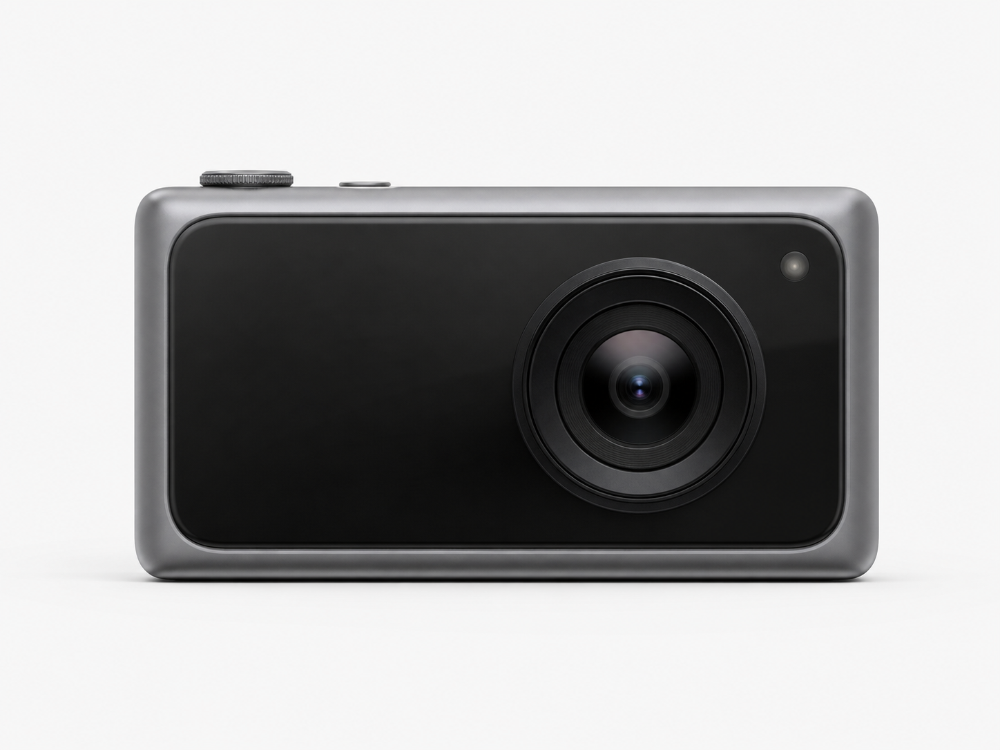
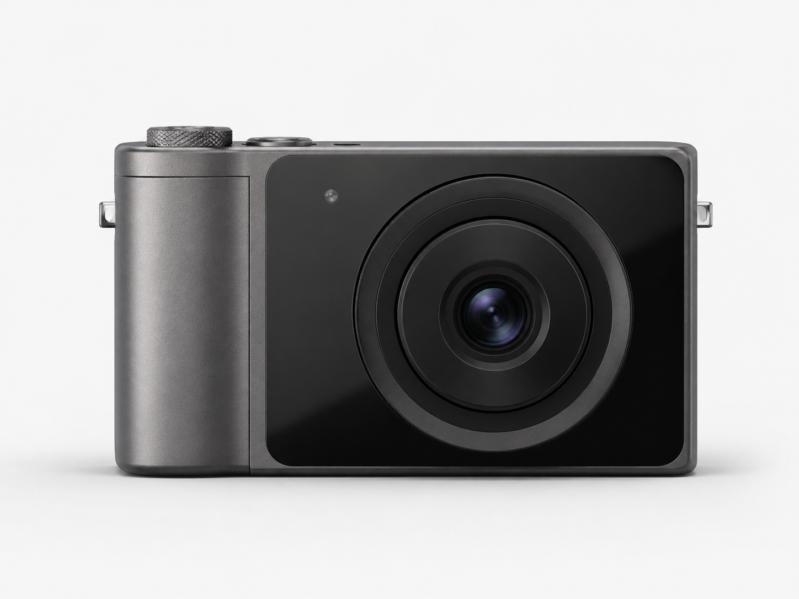
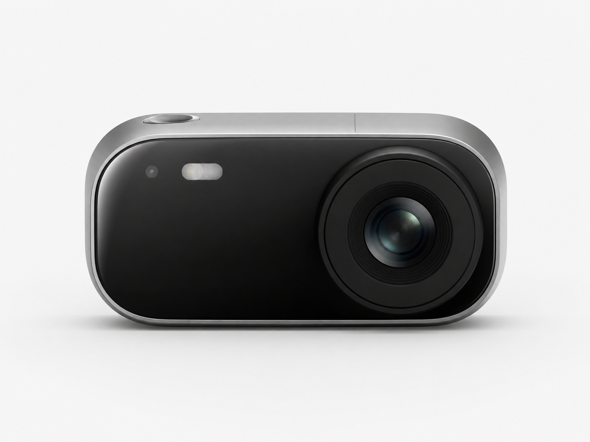

제작 가능성 판단의 어려움
시각적으로 좋아 보여도 실제 구조나 사용성에 문제가 있을 수 있습니다.
최종 프로젝트 PR
From concept to decision.
아이디어를 디자인 시안과 제작 방향으로 연결하는 AI 기반 제품 기획 플랫폼
사용자가 만들고 싶은 제품을 자연어로 입력하면, AI가 여러 디자인 시안을 제안하고 선택한 시안에 대해 소재, 제조 방식, 간단한 구조 체크, 시장성 코멘트를 제공합니다.
문제
Pretty is not enough.
AI로 예쁜 제품 이미지는 쉽게 만들 수 있습니다. 하지만 그 디자인이 실제 제품으로 발전할 수 있는지는 알기 어렵습니다. 제품 디자인에는 형태뿐 아니라 소재, 구조, 제작 방식, 시장성까지 함께 고려되어야 합니다.
시각적으로 좋아 보여도 실제 구조나 사용성에 문제가 있을 수 있습니다.
아이디어 단계에서는 어떤 소재와 제작 방식이 적합한지 판단하기 어렵습니다.
여러 디자인 중 어떤 방향이 더 경쟁력 있는지 비교하기 어렵습니다.
해결 방향
이 서비스는 정밀한 공학 해석 툴이 아니라, 제품 디자인 초기 단계에서 아이디어를 빠르게 구체화하고 판단할 수 있도록 돕는 기획 지원 웹서비스입니다.
서비스 요약
사용자가 만들고 싶은 제품을 입력하면 AI가 디자인 브리프를 정리하고, 여러 디자인 방향을 제안합니다.기획 지원
이후 사용자는 원하는 시안을 선택하고, 선택한 시안에 대한 간단한 제품화 리포트를 확인할 수 있습니다.사용 흐름
사용자가 만들고 싶은 제품을 자연어로 설명합니다.
AI가 제품 종류, 디자인 키워드, 타깃 사용자, 예상 소재를 정리합니다.
AI가 서로 다른 방향의 디자인 시안 2~3개를 제안합니다.
사용자는 마음에 드는 시안을 선택하고 비교합니다.
선택한 시안에 대해 소재, 제조 방식, 구조 체크, 시장성 코멘트를 제공합니다.
예시

프리미엄 디자인

실용적 디자인

미래형 디자인
분석 리포트
선택한 디자인에 대해 초기 기획 단계에서 참고할 수 있는 리포트를 제공합니다.
기획 단계 참고용
무광 알루미늄, ABS 플라스틱 등 제품 방향에 맞는 소재를 제안합니다.
3D 프린팅, CNC, 사출 등 가능한 제작 방식을 제안합니다.
무게 중심, 그립감, 안정성 같은 요소를 간단히 점검합니다.
타깃 사용자와 제품 포지셔닝을 바탕으로 시장성을 간단히 설명합니다.
차별점
More than image generation.
이 서비스는 단순히 이미지를 생성하는 도구가 아니라, 여러 디자인 방향을 비교하고 선택한 시안이 제품으로 발전할 수 있는지 판단할 수 있도록 돕습니다.
일반 이미지 생성 AI
AI 제품 디자인 스튜디오
MVP 범위
이번 프로젝트에서는 정밀 CAD 자동 생성이나 실제 물리 시뮬레이션보다, 단기간에 구현 가능한 제품 기획 지원 기능에 집중합니다.
구현할 기능
단순화할 기능
팀 매칭
디자인, AI, 웹개발, 제품 기획이 함께 필요한 프로젝트입니다. 제품 아이디어를 구체화하고 실제로 작동하는 서비스로 연결할 팀원을 찾고 있습니다.
웹페이지와 데모 화면을 구현합니다.
사용자 입력을 바탕으로 브리프와 분석 리포트를 생성합니다.
사용자가 쉽게 이해할 수 있는 화면 흐름을 설계합니다.
타깃 사용자, 소재, 제조 방식, 시장성 기준을 구체화합니다.
마무리
아이디어에서 선택까지, 제품 기획을 더 빠르고 현실적으로 만드는 AI 플랫폼을 만들고 싶습니다.
AI Product Design Studio